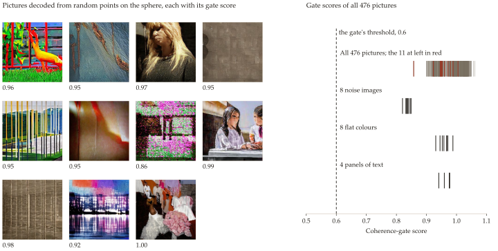
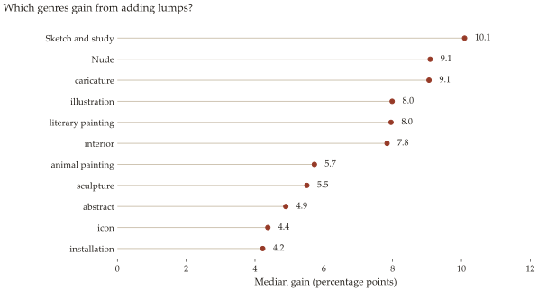
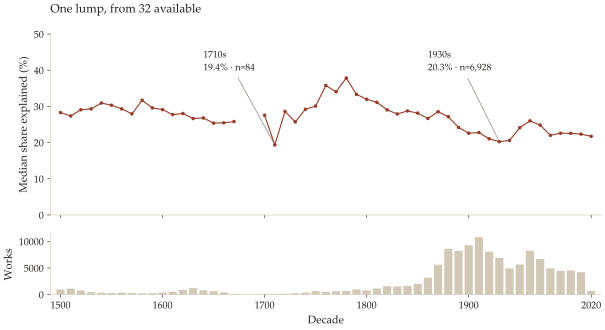
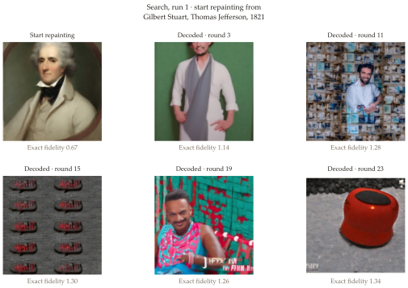

Appendix: what we tested and settled
This appendix holds the tables and figures behind the main pages, grouped by the question each answers. Unless another run is named, counts come from the 15 runs that start at 5 works painted before 1900 (5 starts, 3 loops, 1,920 pictures a run). A cell with 3 numbers reads the search / the random-score loop / the no-step loop.
Three tables the rest refers to
| Group | Pictures | Far and faithful | Far, not faithful | Near, faithful | Near, not faithful |
|---|---|---|---|---|---|
| Works before 1900, repainted from their own vectors | 1,000 | 2 | 1 | 988 | 9 |
| Works from 1900 to 1969, repainted | 512 | 26 | 2 | 474 | 10 |
| Works from 1970 on, repainted | 663 | 94 | 18 | 520 | 31 |
| Random requests inside the cone of the works before 1900 | 192 | 0 | 0 | 0 | 192 |
| Random requests anywhere on the sphere | 64 | 0 | 15 | 0 | 49 |
| Requests read from noise images | 160 | 32 | 7 | 96 | 25 |
| The free search, three runs, pictures | 5,760 | 0 | 4,094 | 79 | 1,587 |
| The search, pictures | 9,600 | 4,380 | 93 | 4,972 | 155 |
| The random-score loop, pictures | 9,600 | 1,534 | 20 | 7,992 | 54 |
| The no-step loop, pictures | 9,600 | 2,708 | 2 | 6,889 | 1 |
| Count | The search | Random-score loop | No-step loop |
|---|---|---|---|
| All pictures | 9,600 | 9,600 | 9,600 |
| Faithful pictures | 9,352 | 9,526 | 9,597 |
| Pictures not feasible (the loop’s reading) | 245 | 72 | 3 |
| Not feasible and far pictures | 92 | 19 | 2 |
| Far pictures | 4,473 | 1,554 | 2,710 |
| Far and faithful pictures | 4,380 | 1,534 | 2,708 |
| Far pictures that pass the 0.575 minimum-gap rule alone | 1,081 | 581 | 297 |
| Admitted (every one faithful) | 142 | 74 | 47 |
| Hits (admitted pictures that are far, faithful and covered by later works) | 120 | 65 | 40 |
| Hits that sit as near a real work as a repainted work does | 64 | 35 | 18 |
| Of those, the ones that pass the decoder’s safety filter | 47 | 30 | 14 |
| Start work | Admitted | Far pictures, of 1,920 | Hits’ lean along the shift, search minus each control |
|---|---|---|---|
| Jan Cossiers, 1641 | 30 / 21 / 14 | 708 / 319 / 547 | +0.053 / +0.081 |
| Fra Angelico, 1419 | 41 / 21 / 8 | 907 / 391 / 666 | +0.006 / +0.055 |
| Alfred Sisley, 1885 | 36 / 12 / 5 | 901 / 305 / 214 | +0.044 / +0.022 |
| Vincent van Gogh, 1890 | 24 / 9 / 10 | 843 / 149 / 1,010 | -0.004 / +0.003 |
| Edgar Degas, 1890 | 11 / 11 / 10 | 1,114 / 390 / 273 | +0.067 / +0.073 |
Far, and whether later art went there
Did later art go where earlier art was sparse?
| Works | AUC, DINOv3 | AUC, SigLIP | Beyond the bar, DINOv3 | Far in both observers |
|---|---|---|---|---|
| All later works | 0.901 | 0.904 | 26.8% (SigLIP 26.5%) | |
| 1900 to 1959 | 0.846 | 0.854 | 11.2% | 1,651 of 35,874 |
| From 1960 on | 0.959 | 0.956 | 43.5% | 9,530 of 33,594 |
| Other media | 0.979 | 0.981 | ||
| Held-out works before 1900 | 1.0% | 71 of 24,627 |
Are later works still far once repainted by the decoder?
| Repainted works | Far and faithful, 1900 to 1969 | Far and faithful, before 1900 |
|---|---|---|
| All | 26 of 512 | 2 of 1,000 |
| With the reference’s artists removed | 26 of 405 | 0 of 161 |
| Trip | Median year of the 10 nearest real works | Median lean |
|---|---|---|
| 0 | 1856 | -0.01 |
| 1 | 1856 | -0.01 |
| 2 | 1851 | -0.01 |
| 3 | 1857 | 0.01 |
| 4 | 1870 | 0.02 |
| 5 | 1878 | 0.04 |
| 6 | 1905 | 0.10 |
Which distance, and how many neighbours?
| Score | AUC, DINOv3 | AUC, SigLIP |
|---|---|---|
| Mean chord to the 15 nearest (5, 10 and 30 within 0.003 of it) | 0.901 | 0.904 |
| Distance to the centre | 0.864 | 0.849 |
| Leftover outside 32 directions (loners give the same AUC by construction) | 0.826 | 0.879 |
| Outside 32 regions | 0.743 | 0.853 |
| Local ratio | 0.742 | 0.783 |
| Kind of far | Later works that pass, of 512 | Earlier works that pass, of 1,000 | AUC |
|---|---|---|---|
| The score | 28 (26 faithful) | 3 (2 faithful) | 0.85 |
| A bar scaled to the neighbourhood | 4 far and faithful | 1 far and faithful | 0.74 |
| The leftover | 5 | 0 | 0.79 |
What if the search is scored by the leftover?
| Count | The leftover search | The search | Random-score loop | No-step loop |
|---|---|---|---|---|
| Picked, Jan Cossiers, 1641 | 59 | 59 | 18 | 5 |
| Picked, Fra Angelico, 1419 | 220 | 138 | 11 | 1 |
| Picked, Alfred Sisley, 1885 | 48 | 35 | 14 | 3 |
| Picked, Vincent van Gogh, 1890 | 331 | 30 | 3 | 4 |
| Picked, Edgar Degas, 1890 | 21 | 28 | 18 | 9 |
| Picked, all 5 starts | 679 | 290 | 64 | 22 |
| Pictures with a large leftover share, of 9,600 | 3,955 | 1,750 | ||
| Far pictures, of 9,600 | 5,995 | 4,473 |
Where do the far later works sit?
| Share of the region the past holds | Far later works, DINOv3 | Far later works, SigLIP |
|---|---|---|
| Under 1% | 12,607 of 18,626 | 15,223 of 18,392 |
| Half or more | 58 | 107 |
Why 2 observers, and why rank by the smaller of their 2 scores?
| Count | DINOv3 | SigLIP |
|---|---|---|
| Held-out works before 1900 far in the observer by itself | 247 | 247 |
| Repainted works before 1900 far in the observer by itself, of 1,000 (the 3 far in both included) | 9 | 12 |
| Repainted works before 1900 far in this observer only | 6 | 9 |
Faithful, and what a bar says
Why check faithfulness at all?
| Count | The search | Random-score loop | No-step loop |
|---|---|---|---|
| Pictures the faithful condition made not feasible | 245 | 72 | 3 |
| Far pictures the condition removed | 92 | 19 | 2 |
| Of those, covered | 85 | 19 | 2 |
| Of those, covered and also near a real work | 66 | 16 | 2 |
| Hits, in the runs | 120 | 65 | 40 |
| Hits, replayed without the faithful condition in the admission step | 112 | 64 | 40 |
| Pictures that enter the admitted pictures in the replay | 18 | 3 | 0 |
| Pictures that leave them in the replay | 17 | 3 | 0 |
| Admitted in the replay (the runs gave 142) | 143 | ||
| Share of hits close to a dated real work and past the filter, in the replay (the runs gave 0.392) | 0.393 |
Can a model say whether a picture looks like a picture?

What can fidelity not say?
| Group | Median fidelity |
|---|---|
| The no-step loop | 0.359 |
| Today’s reference, repainted works before 1900 (593) | 0.526 |
| Today’s reference, repainted works from 1900 to 1969 (792) | 0.539 |
| The random-score loop | 0.558 |
| Today’s reference, repainted works from 1970 on (663) | 0.581 |
| The search | 0.589 |
| Requests read from noise images | 0.700 |
| Random requests inside the cone | 0.885 |
| Random requests on the sphere | 1.378 |
Does each check work on requests whose origin we know?
| Check | Repainted real works | Random requests | Random requests inside the cone | Requests read from noise images |
|---|---|---|---|---|
| Faithful, passes | 3,463 of 3,560 | 0 of 256 | 0 of 192 | 128 of 160 |
| Near a real work, passes | 189 of 192 | 153 of 160 | ||
| Nearness to a real work, DINOv3 median | 0.583 | 0.593 |
What does a bar say, and why a bar?
| Bar | DINOv3 | SigLIP | Of 2,048 reference pictures, pass both |
|---|---|---|---|
| The bar of Q7 | 0.9614 | 0.9001 | 5 |
| A bar from today’s reference | 1.0449 | 0.9577 | 0 |
| Regions and draw | The search | Random-score loop | No-step loop | The search is ahead of the random-score loop | The search is ahead of the no-step loop |
|---|---|---|---|---|---|
| One bar, for comparison | 4,380 | 1,534 | 2,708 | ahead | not ahead |
| 4 regions, draw 1 | 2,887 | 332 | 940 | ahead | not ahead |
| 4 regions, draw 2 | 3,303 | 472 | 1,301 | ahead | not ahead |
| 4 regions, draw 3 | 2,516 | 277 | 1,016 | ahead | not ahead |
| 4 regions, draw 4 | 1,256 | 372 | 588 | not ahead | not ahead |
| 4 regions, draw 5 | 1,153 | 340 | 516 | not ahead | ahead |
| 8 regions, draw 1 | 500 | 126 | 429 | ahead | not ahead |
| 8 regions, draw 2 | 500 | 128 | 305 | ahead | ahead |
| 8 regions, draw 3 | 432 | 108 | 175 | ahead | ahead |
| 8 regions, draw 4 | 435 | 97 | 156 | ahead | ahead |
| 8 regions, draw 5 | 518 | 213 | 365 | not ahead | not ahead |
| Draws in which the search is ahead, of 10 | 7 | 4 |
| Count, of the 9,600 pictures of each loop | The search | Random-score loop | No-step loop |
|---|---|---|---|
| DINOv3, the sparsest of 8 regions (209 reference pictures, its own bar 1.068, the one bar 0.961): pictures read there | 6,566 | 4,500 | 7,164 |
| DINOv3, one bar: far and faithful pictures in that region | 3,738 | 964 | 2,544 |
| DINOv3, one bar: far and faithful pictures in the other 7 regions | 642 | 570 | 164 |
| DINOv3, a bar per region: far and faithful pictures in that region | 408 | 10 | 19 |
| DINOv3, a bar per region: far and faithful pictures in the other 7 regions | 92 | 116 | 410 |
| SigLIP, the sparsest of 8 regions (327 reference pictures, its own bar 0.955, the one bar 0.900): pictures read there | 8,909 | 8,687 | 8,104 |
| SigLIP, one bar: far and faithful pictures in that region | 4,380 | 1,532 | 2,707 |
| SigLIP, one bar: far and faithful pictures in the other 7 regions | 0 | 2 | 1 |
| SigLIP, a bar per region: far and faithful pictures in that region | 489 | 48 | 39 |
| SigLIP, a bar per region: far and faithful pictures in the other 7 regions | 11 | 78 | 390 |
What does the coherence gate score?
| Group | Gate score, median |
|---|---|
| Real works | 1.014 |
| Pictures painted from noise | 0.913 |
| The search | 0.924 |
| The random-score loop | 0.968 |
| The no-step loop | 0.963 |
| A pure noise image (a range, not a median) | 0.8203 to 0.8488 |
What the search and its controls did
What does the real score do with no step?
| Count, type of graphics card and loop | Jan Cossiers, 1641 | Fra Angelico, 1419 | Alfred Sisley, 1885 | Vincent van Gogh, 1890 | Edgar Degas, 1890 | All 5 starts |
|---|---|---|---|---|---|---|
| Admitted, another type of card: the no-step loop told the real score | 22 | 47 | 28 | 33 | 16 | 146 |
| Admitted, another type of card: the no-step loop | 17 | 8 | 7 | 12 | 10 | 54 |
| Far pictures, another type of card: the no-step loop told the real score | 1,492 | 1,313 | 685 | 1,126 | 822 | 5,438 |
| Far pictures, another type of card: the no-step loop | 1,062 | 602 | 155 | 147 | 268 | 2,234 |
| Admitted, the search’s type of card: the no-step loop told the real score | 34 | 22 | 22 | 23 | 16 | 117 |
| Admitted, the search’s type of card: the no-step loop | 14 | 8 | 5 | 10 | 10 | 47 |
| Admitted, the search’s type of card: the search | 30 | 41 | 36 | 24 | 11 | 142 |
| Far pictures, the search’s type of card: the no-step loop told the real score | 1,000 | 530 | 745 | 1,333 | 722 | 4,330 |
| Far pictures, the search’s type of card: the no-step loop | 547 | 666 | 214 | 1,010 | 273 | 2,710 |
| Far pictures, the search’s type of card: the search | 708 | 907 | 901 | 843 | 1,114 | 4,473 |
Why does the restart use 4 pictures?
| Count and number of pictures the restart uses | Jan Cossiers, 1641 | Fra Angelico, 1419 | Alfred Sisley, 1885 | Vincent van Gogh, 1890 | Edgar Degas, 1890 | All 5 starts |
|---|---|---|---|---|---|---|
| Admitted, restart from 1 | 57 | 101 | 103 | 90 | 74 | 425 |
| Admitted, restart from 4 (the search) | 30 | 41 | 36 | 24 | 11 | 142 |
| Admitted, restart from 16 | 22 | 18 | 8 | 10 | 6 | 64 |
| Admitted, restart from 32 | 7 | 11 | 8 | 11 | 6 | 43 |
| Far pictures, restart from 1 | 969 | 1,108 | 1,083 | 1,044 | 857 | 5,061 |
| Far pictures, restart from 4 (the search) | 708 | 907 | 901 | 843 | 1,114 | 4,473 |
| Far pictures, restart from 16 | 674 | 1,257 | 698 | 1,112 | 278 | 4,019 |
| Far pictures, restart from 32 | 80 | 578 | 116 | 228 | 123 | 1,125 |
| Hits, read again, restart from 1 | 37 | 65 | 58 | 63 | 60 | 283 |
| Hits, restart from 4 (the search) | 23 | 27 | 35 | 24 | 11 | 120 |
| Far and faithful, read again, restart from 1 | 743 | 911 | 1,001 | 924 | 788 | 4,367 |
| Far and faithful, restart from 4 (the search) | 679 | 864 | 896 | 840 | 1,101 | 4,380 |
| Far and faithful and off the manifold, read again, restart from 1 | 1,004 | |||||
| Far and faithful and off the manifold, restart from 4 (the search) | 60 | 227 | 43 | 1 | 0 | 331 |
| Count and restart | A work dated 1900 or later within the manifold line and none dated before 1900 | A work dated before 1900 within the manifold line | Only undated works within the manifold line | Off the manifold | All |
|---|---|---|---|---|---|
| Far and faithful: restart from 1 | 3,188 | 124 | 51 | 1,004 | 4,367 |
| Far and faithful: restart from 4 (the search) | 3,850 | 180 | 19 | 331 | 4,380 |
| Of those, with a large leftover share: restart from 1 | 493 | 2 | 10 | 459 | 964 |
| Of those, with a large leftover share: restart from 4 (the search) | 1,314 | 11 | 8 | 205 | 1,538 |
| Hits: restart from 1 | 189 | 10 | 7 | 77 | 283 |
| Hits: restart from 4 (the search) | 97 | 6 | 1 | 16 | 120 |
What does a single walk with selection paint?
| Count and procedure | Jan Cossiers, 1641 | Fra Angelico, 1419 | Alfred Sisley, 1885 | Vincent van Gogh, 1890 | Edgar Degas, 1890 | All 5 starts |
|---|---|---|---|---|---|---|
| Admitted: the search | 30 | 41 | 36 | 24 | 11 | 142 |
| Admitted: the single walk | 35 | 25 | 55 | 23 | 49 | 187 |
| Far and faithful: the search | 679 | 864 | 896 | 840 | 1,101 | 4,380 |
| Far and faithful: the single walk | 442 | 341 | 527 | 108 | 1,028 | 2,446 |
| With a work dated 1900 or later within the manifold line and none dated before 1900: the search | 601 | 599 | 728 | 828 | 1,094 | 3,850 |
| With a work dated 1900 or later within the manifold line and none dated before 1900: the single walk | 418 | 323 | 396 | 81 | 847 | 2,065 |
| Of those, with a large leftover share: the search | 124 | 206 | 176 | 276 | 532 | 1,314 |
| Of those, with a large leftover share: the single walk | 47 | 120 | 22 | 8 | 215 | 412 |
| Off the manifold: the search | 60 | 227 | 43 | 1 | 0 | 331 |
| Off the manifold: the single walk | 10 | 13 | 100 | 23 | 131 | 277 |
Does the search reach more pictures that lie apart?
| Count and procedure | Jan Cossiers, 1641 | Fra Angelico, 1419 | Alfred Sisley, 1885 | Vincent van Gogh, 1890 | Edgar Degas, 1890 | All 5 starts |
|---|---|---|---|---|---|---|
| Pictures of the case that lie apart: the search | 43 | 65 | 28 | 28 | 23 | 187 |
| Pictures of the case that lie apart: the single walk | 16 | 25 | 12 | 7 | 157 | 217 |
| Pictures of the case that lie apart: the random-score loop | 11 | 8 | 10 | 2 | 5 | 36 |
| Pictures of the case that lie apart: the no-step loop | 3 | 1 | 0 | 3 | 3 | 10 |
| Far and faithful pictures off the manifold that lie apart: the search | 45 | 105 | 23 | 1 | 0 | 174 |
| Far and faithful pictures off the manifold that lie apart: the single walk | 8 | 10 | 65 | 18 | 104 | 205 |
| Far and faithful pictures off the manifold that lie apart: the random-score loop | 13 | 15 | 2 | 0 | 59 | 89 |
| Far and faithful pictures off the manifold that lie apart: the no-step loop | 4 | 4 | 3 | 8 | 30 | 49 |
How do the 3 loops compare without a bar?
| Share of pictures beyond the reference’s own percentile, in both observers | 50th | 90th | 99th | 99.9th |
|---|---|---|---|---|
| The search | 0.962 | 0.917 | 0.466 | 0.028 |
| The random-score loop | 0.951 | 0.895 | 0.162 | 0.0006 |
| The no-step loop | 0.953 | 0.856 | 0.282 | 0.0007 |
What counts as a hit, and how many hits are close to a dated real work?
| Loop and start work | Hits | Close to a dated real work | Past filter | Both |
|---|---|---|---|---|
| The search: Jan Cossiers, 1641 | 23 | 15 | 21 | 13 |
| The search: Fra Angelico, 1419 | 27 | 9 | 24 | 7 |
| The search: Alfred Sisley, 1885 | 35 | 13 | 30 | 8 |
| The search: Vincent van Gogh, 1890 | 24 | 18 | 19 | 14 |
| The search: Edgar Degas, 1890 | 11 | 9 | 7 | 5 |
| The search: All 5 starts | 120 | 64 | 101 | 47 |
| Random-score loop: Jan Cossiers, 1641 | 19 | 8 | 16 | 6 |
| Random-score loop: Fra Angelico, 1419 | 18 | 13 | 13 | 10 |
| Random-score loop: Alfred Sisley, 1885 | 12 | 5 | 11 | 5 |
| Random-score loop: Vincent van Gogh, 1890 | 9 | 7 | 9 | 7 |
| Random-score loop: Edgar Degas, 1890 | 7 | 2 | 5 | 2 |
| Random-score loop: All 5 starts | 65 | 35 | 54 | 30 |
| No-step loop: Jan Cossiers, 1641 | 13 | 8 | 12 | 7 |
| No-step loop: Fra Angelico, 1419 | 6 | 2 | 6 | 2 |
| No-step loop: Alfred Sisley, 1885 | 4 | 1 | 4 | 1 |
| No-step loop: Vincent van Gogh, 1890 | 10 | 6 | 8 | 4 |
| No-step loop: Edgar Degas, 1890 | 7 | 1 | 3 | 0 |
| No-step loop: All 5 starts | 40 | 18 | 33 | 14 |
| Hits by kind | The search | Random-score loop | No-step loop |
|---|---|---|---|
| A work dated 1900 or later within the manifold line and none dated before 1900 | 97 | 55 | 24 |
| A work dated before 1900 within the manifold line | 6 | 3 | 10 |
| Only undated works within the manifold line | 1 | 2 | 0 |
| Off the manifold | 16 | 5 | 6 |
| All hits | 120 | 65 | 40 |
| Of the hits of the first row, with a large leftover share | 29 | 9 | 1 |
| Of the hits off the manifold, with a large leftover share | 6 | 1 | 2 |
Do the hits look like something a person made?

Read blind, are pictures drawn at random a picture of something?
| Procedure and kind | Drawn | A picture of something / unsure / noise | Resembles one of its 3 nearest real works: yes / partly / no |
|---|---|---|---|
| The search: off the manifold | 12 | 11 / 1 / 0 | 1 / 6 / 5 |
| The search: a work dated before 1900 within the manifold line | 6 | 4 / 1 / 1 | 2 / 3 / 1 |
| Random-score loop: a work dated 1900 or later within the manifold line and none dated before 1900 | 4 | 3 / 1 / 0 | 3 / 1 / 0 |
| Random-score loop: a work dated before 1900 within the manifold line | 2 | 2 / 0 / 0 | 2 / 0 / 0 |
| Random-score loop: off the manifold | 4 | 3 / 1 / 0 | 1 / 3 / 0 |
| No-step loop: a work dated 1900 or later within the manifold line and none dated before 1900 | 4 | 4 / 0 / 0 | 1 / 3 / 0 |
| No-step loop: a work dated before 1900 within the manifold line | 2 | 2 / 0 / 0 | 1 / 1 / 0 |
| No-step loop: off the manifold | 4 | 4 / 0 / 0 | 0 / 4 / 0 |
| The single walk: a work dated 1900 or later within the manifold line and none dated before 1900 | 4 | 3 / 0 / 1 | 1 / 3 / 0 |
| The single walk: a work dated before 1900 within the manifold line | 2 | 1 / 0 / 1 | 0 / 2 / 0 |
| The single walk: off the manifold | 4 | 4 / 0 / 0 | 2 / 2 / 0 |
| Against today’s reference, the search: faithful and on the manifold | 6 | 6 / 0 / 0 | 2 / 4 / 0 |
| Against today’s reference, the random-score loop: faithful and off the manifold | 4 | 4 / 0 / 0 | 3 / 1 / 0 |
| Against today’s reference, the no-step loop: faithful and off the manifold | 4 | 4 / 0 / 0 | 1 / 3 / 0 |
| All | 62 | 55 / 4 / 3 | 20 / 36 / 6 |
Do the loops lean along the shift of Q3?
| Start work | The search | Random-score loop | No-step loop |
|---|---|---|---|
| Jan Cossiers, 1641 | +0.25 | +0.20 | +0.17 |
| Fra Angelico, 1419 | +0.25 | +0.24 | +0.19 |
| Alfred Sisley, 1885 | +0.23 | +0.18 | +0.20 |
| Vincent van Gogh, 1890 | +0.22 | +0.23 | +0.22 |
| Edgar Degas, 1890 | +0.26 | +0.20 | +0.19 |
| Start work | The search | Random-score loop | No-step loop |
|---|---|---|---|
| Jan Cossiers, 1641 | +0.25 | +0.22 | +0.21 |
| Fra Angelico, 1419 | +0.24 | +0.23 | +0.08 |
| Alfred Sisley, 1885 | +0.23 | +0.21 | +0.19 |
| Vincent van Gogh, 1890 | +0.26 | +0.22 | +0.22 |
| Edgar Degas, 1890 | +0.26 | +0.22 | +0.18 |
| All 5 starts | +0.25 | +0.22 | +0.19 |
| Run | The free search | Its run told random scores |
|---|---|---|
| 1 | 0.16 | 0.07 |
| 2 | 0.15 | 0.09 |
| 3 | 0.12 | 0.07 |
Are the far pictures far from all art, or only from art before 1900?
| Far and faithful pictures, against today’s reference | The search | Random-score loop | No-step loop |
|---|---|---|---|
| Not far from today’s reference | 4,221 of 4,380 | 1,493 of 1,534 | 2,664 of 2,708 |
| Covered (also over half of the 15 nearest dated 1900 on, averaged over the two observers) | 4,221 | 1,492 | 2,660 |
| Pictures | Today’s own bar | The matched bar | The 1900 bar on the distance from today’s reference |
|---|---|---|---|
| The 26 far and faithful later works | 1 | 2 | 3 |
| Calibration works | 0 | 0 | 0 |
| The free search’s admitted pictures, first run (of 749) | 343 | 530 | 642 |
| second run (of 604) | 126 | 300 | 428 |
| third run (of 830) | 403 | 588 | 713 |
| Kind and procedure | Jan Cossiers, 1641 | Fra Angelico, 1419 | Alfred Sisley, 1885 | Vincent van Gogh, 1890 | Edgar Degas, 1890 | All 5 starts |
|---|---|---|---|---|---|---|
| Far and faithful: the search | 679 | 864 | 896 | 840 | 1,101 | 4,380 |
| Far and faithful: the random-score loop | 312 | 380 | 304 | 149 | 389 | 1,534 |
| Far and faithful: the no-step loop | 545 | 666 | 214 | 1,010 | 273 | 2,708 |
| Far and faithful: the single walk | 442 | 341 | 527 | 108 | 1,028 | 2,446 |
| A work dated 1900 or later within the manifold line and none dated before 1900: the search | 601 | 599 | 728 | 828 | 1,094 | 3,850 |
| A work dated 1900 or later within the manifold line and none dated before 1900: the random-score loop | 281 | 336 | 299 | 120 | 211 | 1,247 |
| A work dated 1900 or later within the manifold line and none dated before 1900: the no-step loop | 524 | 334 | 192 | 551 | 113 | 1,714 |
| A work dated 1900 or later within the manifold line and none dated before 1900: the single walk | 418 | 323 | 396 | 81 | 847 | 2,065 |
| A work dated before 1900 within the manifold line: the search | 13 | 24 | 125 | 11 | 7 | 180 |
| A work dated before 1900 within the manifold line: the random-score loop | 13 | 19 | 3 | 29 | 2 | 66 |
| A work dated before 1900 within the manifold line: the no-step loop | 8 | 316 | 7 | 448 | 55 | 834 |
| A work dated before 1900 within the manifold line: the single walk | 14 | 5 | 18 | 4 | 19 | 60 |
| Only undated works within the manifold line: the search | 5 | 14 | 0 | 0 | 0 | 19 |
| Only undated works within the manifold line: the random-score loop | 4 | 3 | 0 | 0 | 27 | 34 |
| Only undated works within the manifold line: the no-step loop | 4 | 4 | 6 | 2 | 37 | 53 |
| Only undated works within the manifold line: the single walk | 0 | 0 | 13 | 0 | 31 | 44 |
| Off the manifold: the search | 60 | 227 | 43 | 1 | 0 | 331 |
| Off the manifold: the random-score loop | 14 | 22 | 2 | 0 | 149 | 187 |
| Off the manifold: the no-step loop | 9 | 12 | 9 | 9 | 68 | 107 |
| Off the manifold: the single walk | 10 | 13 | 100 | 23 | 131 | 277 |
| Reading of the dates | The search | Random-score loop | No-step loop |
|---|---|---|---|
| A work dated before 1900 within the manifold line | 180 | 66 | 834 |
| A work dated 1900 or later within the manifold line, none dated before 1900 | 3,850 | 1,247 | 1,714 |
| Of those, in both observers, and none dated before 1900 in either | 3,192 | 782 | 1,033 |
| Of those, an undated work also within the line | 3,519 | 963 | 1,446 |
| With undated works dated by their artist | 3,810 | 1,265 | 1,640 |
| With undated works dated by their artist, and the pictures that have a still-undated work within the line also set aside | 1,312 | 1,054 | 1,515 |
| Count and loop | Jan Cossiers, 1641 | Fra Angelico, 1419 | Alfred Sisley, 1885 | Vincent van Gogh, 1890 | Edgar Degas, 1890 | All 5 starts |
|---|---|---|---|---|---|---|
| With undated works dated by their artist, and the pictures that have a still-undated work within the line also set aside: the search | 312 | 327 | 370 | 239 | 64 | 1,312 |
| With undated works dated by their artist, and the pictures that have a still-undated work within the line also set aside: the random-score loop | 243 | 238 | 280 | 95 | 198 | 1,054 |
| With undated works dated by their artist, and the pictures that have a still-undated work within the line also set aside: the no-step loop | 513 | 190 | 167 | 506 | 139 | 1,515 |
| With undated works dated by their artist: the search | 600 | 600 | 710 | 824 | 1,076 | 3,810 |
| With undated works dated by their artist: the random-score loop | 283 | 337 | 298 | 119 | 228 | 1,265 |
| With undated works dated by their artist: the no-step loop | 528 | 234 | 198 | 538 | 142 | 1,640 |
| A real work lies within the manifold line | The search | Random-score loop | No-step loop |
|---|---|---|---|
| in both observers | 3,348 | 857 | 1,860 |
| in exactly one | 701 | 490 | 741 |
| in neither | 331 | 187 | 107 |
| Far and faithful pictures off the manifold | Number | Median distance to the nearest real work, DINOv3 | SigLIP |
|---|---|---|---|
| The search | 331 | 0.884 | 0.873 |
| Random-score loop | 187 | 0.814 | 0.859 |
| No-step loop | 107 | 0.800 | 0.854 |
| The manifold line | 0.763 | 0.830 |
Why this rule for on and off the manifold?
| Reading of “a real work is near” | Works from 1970 on, repainted (41) | Works from 1900 to 1969, repainted (5) | Requests read from noise images (8) | Random requests (5) |
|---|---|---|---|---|
| Sparseness: not far from today’s reference | 41 : 0 | 5 : 0 | 8 : 0 | no count |
| The test of Q4, carried to the observers: one of the 10 nearest reference pictures also has a large leftover share | 25 : 16 | 0 : 5 | 2 : 6 | no count |
| The nearest of the 172,171 original works within the manifold line, a repaint’s own original left out | 35 : 6 | 4 : 1 | 8 : 0 | 3 : 2 |
| Pictures, with nothing left out | In both observers | In one observer | In neither |
|---|---|---|---|
| Held-out works from before 1900, repainted (1,000) | 985 | 14 | 1 |
| Works from 1970 on, repainted (663) | 541 | 112 | 10 |
| Requests read from noise images (160) | 151 | 9 | 0 |
| Random requests (256) | 207 | 41 | 8 |
| Far and faithful pictures of each set | Number | A work dated 1900 or later within the manifold line and none dated before 1900 | A work dated before 1900 within the manifold line | Only undated works within the manifold line | Off the manifold |
|---|---|---|---|---|---|
| Held-out works from before 1900, repainted (of 1,000) | 2 | 1 | 1 | 0 | 0 |
| Works from 1900 to 1969, repainted (of 512) | 26 | 21 | 3 | 0 | 2 |
| Works from 1970 on, repainted (of 663) | 94 | 82 | 6 | 1 | 5 |
| Requests read from noise images (of 160) | 32 | 31 | 1 | 0 | 0 |
| The search (of 9,600) | 4,380 | 3,850 | 180 | 19 | 331 |
Against today’s reference, do pictures from different starts meet in a place off the manifold?
| Start | Eligible | Off the manifold | Faithful and off the manifold | Far from today’s reference by its own bar | Over today’s leftover line | Admitted |
|---|---|---|---|---|---|---|
| Start 1 | 465 / 0 / 0 | 555 / 3 / 5 | 545 / 3 / 5 | 31 / 0 / 0 | 2 / 0 / 0 | 4 / 0 / 0 |
| Start 2 | 50 / 1 / 1 | 148 / 1 / 10 | 148 / 1 / 10 | 1 / 0 / 0 | 1 / 0 / 0 | 1 / 0 / 0 |
| Start 3 | 238 / 0 / 0 | 498 / 0 / 0 | 486 / 0 / 0 | 27 / 0 / 0 | 44 / 0 / 0 | 5 / 0 / 0 |
| Start 4 | 48 / 3 / 62 | 86 / 12 / 94 | 86 / 12 / 94 | 0 / 0 / 0 | 0 / 0 / 0 | 0 / 0 / 0 |
| Start 5 | 246 / 3 / 0 | 429 / 41 / 26 | 429 / 41 / 26 | 452 / 0 / 0 | 796 / 0 / 0 | 7 / 0 / 0 |
| All 5, of 9,600 pictures each | 1,047 / 7 / 63 | 1,716 / 57 / 135 | 1,694 / 57 / 135 | 511 / 0 / 0 | 843 / 0 / 0 | 17 / 0 / 0 |
| Works from 1970 on, read as they are | Works | Smaller radius | Larger radius |
|---|---|---|---|
| Places among the works far in both observers | 4,236 | 0 | 0 |
| Places among as many works that are not far | 4,236 | 13 | 17 |
| Far works: other far works within the radius of one, median | 4,236 | 0 | 0 |
| Far works with 14 or more far works within the radius | 21 | 55 | |
| Of the works within the radius of those, share by the same artist (mean) | 95% | 87% | |
| Places among the far works by a looser rule (any 3 artists, 1 work each) | 4,236 | 4 | 22 |
Why a decoder, and why a continuous space?
| Size the works are downsampled to | Real later works far and faithful, of 512 | Calibration works far and faithful, of 1,000 |
|---|---|---|
| 128 pixels | 33 | 2 |
| 64 pixels | 36 | 1 |
What the search and its controls painted
What did DuROOM search paint on the manifold, frozen at 1900?
![11 rows, 1 per picture DuROOM search painted that is far, faithful and on the manifold with a work dated 1900 or later within the line and none dated before. Each row: the starting work (image and credit), the painted picture with its round, and its 3 nearest real works of any date in 1 observer, each with artist, year, title and its distance against that observer's manifold line (0.763 DINOv3, 0.830 SigLIP); under 10 of the 11 pictures, our reading by eye of work 1. Rows: Jan Cossiers, 1641 / round 50 / in SigLIP: Piero Dorazio, 1990, 0.726; Sol Lewitt, 1996, 0.741; Sol Lewitt, undated, 0.749 | Alfred Sisley, 1885 / round 55 / in SigLIP: Marcel Barbeau, 1967, 0.766; Alighiero Boetti, 1990, 0.816; Charles Bezie, 1980, 0.832 | Alfred Sisley, 1885 / round 38 / in DINOv3: Gene Davis, 1971, 0.511; Gene Davis, 1965, 0.518; Gene Davis, 1967, 0.535 | Alfred Sisley, 1885 / round 54 / in SigLIP: Alighiero Boetti, 1990, 0.813; Gene Davis, 1971, 0.818; Roger Weik, 2011, 0.821 | Alfred Sisley, 1885 / round 36 / in SigLIP: Gene Davis, 1960, 0.620; Gene Davis, 1959, 0.657; Ding Yi, 1998, 0.695 | Alfred Sisley, 1885 / round 38 / in SigLIP: Gene Davis, 1972, 0.682; Ha Chong Hyun, 1977, 0.742; Gene Davis, 1978, 0.745 | Vincent van Gogh, 1890 / round 55 / in SigLIP: Hossein Zenderoudi, 1972, 0.761; Jahar Dasgupta, undated, 0.771; Simon Hantai, 1969, 0.779 | Edgar Degas, 1890 / round 15 / in DINOv3: Gene Davis, 1971, 0.440; Herman De Vries, 1974, 0.442; Gene Davis, 1961, 0.469 | Edgar Degas, 1890 / round 32 / in DINOv3: Kazuo Shiraga, undated, 0.643; Rene Duvillier, 1965, 0.700; Jean Messagier, 1992, 0.721 | Edgar Degas, 1890 / round 17 / in SigLIP: Ding Yi, 2001, 0.688; Eric Zammitt, 2008, 0.688; Manfred Kuttner, undated, 0.700 | Edgar Degas, 1890 / round 17 / in SigLIP: Leon Berkowitz, 1968, 0.619; Gene Davis, 1968, 0.634; Gene Davis, 1965, 0.660.](figures/appendix_finds_on_v6.svg)
What did DuROOM search paint off the manifold, frozen at 1900?
![3 rows from the runs frozen at 1900, 2 of the 5 starts, each a far, faithful picture with no real work within the manifold line in either observer and a large leftover share. Each row: the starting work (Jan Cossiers, The Martyrdom of St Catherine, 1641, shown; Fra Angelico, Madonna of Humility, 1419, named only), the painted picture with its round, and its 3 nearest real works of any date in SigLIP, each beyond the line (0.830). Rows: Jan Cossiers, 1641 / round 7 / in SigLIP: Robert Silvers, undated, 0.864; Robert Silvers, undated, 0.871; Gerhard Richter, 2007, 0.873 | Fra Angelico, 1419 (named only) / round 15 / in SigLIP: Horacio Garcia Rossi, undated, 0.873; Nina Tokhtaman Valetova, 2009, 0.885; Abraham Palatnik, 1958, 0.891 | Fra Angelico, 1419 (named only) / round 28 / in SigLIP: Guy Mees, 1989, 0.899; Roy Lichtenstein, 1970, 0.914; Gerwald Rockenschaub, 2007, 0.918.](figures/appendix_finds_off1900_v2.svg)
What did DuROOM search paint off the manifold, against today’s reference?
![5 rows from the runs against today's reference, each a far, faithful picture with no real work within the manifold line in either observer. Each row: the starting work, the painted picture with its round, and its 3 nearest real works of any date, each with its distance beyond the line; under each painted picture, our reading by eye of work 1. Rows: Orest Kiprensky, 1807 / round 14 / in SigLIP: Alfred Freddy Krupa, 2015, 0.870; Ellsworth Kelly, 1955, 0.901; Zdzislaw Beksinski, undated, 0.902 | Orest Kiprensky, 1807 / round 15 / in SigLIP: Noma Bar, 2017, 0.836; Mario Ballocco, 1950, 0.872; Lorser Feitelson, 1962, 0.874 | Orest Kiprensky, 1807 / round 14 / in DINOv3: Nuri Iyem, 1979, 0.795; Nuri Iyem, 1999, 0.808; Felix Labisse, 1966, 0.835 | Käthe Kollwitz, 1897 / round 5 / in SigLIP: Zdzislaw Beksinski, undated, 0.849; M C Escher, 1959, 0.859; Lee Bontecou, 1967, 0.863 | Konstantin Gorbatov, 1920 / round 28 / in SigLIP: Grazia Varisco, 2008, 0.838; Mira Schendel, 1987, 0.842; Stephen Antonakos, 1996, 0.854.](figures/appendix_finds_today_v3.svg)
What does a random draw of DuROOM search’s pictures look like?
![Pictures of DuROOM search drawn at random, grouped by where they landed; 15 rows. Each row: the painted picture with its starting work named and its round, then its 3 nearest real works of any date, numbered 1 to 3, each with artist, year, title and its distance against the manifold line; under each painted picture, our reading by eye. Groups: DuROOM search, off the manifold: 11 shown, drawn at random from 122; DuROOM search, a work dated before 1900 within the line: 4 shown, drawn at random from 98.](figures/appendix_grid_search_v3.svg)
What does a random draw of the 2 controls’ pictures look like?
![Pictures of the 2 controls drawn at random, grouped by where they landed; 14 rows. Each row: the painted picture with its starting work named and its round, then its 3 nearest real works of any date, numbered 1 to 3, each with artist, year, title and its distance against the manifold line; under each painted picture, our reading by eye. Groups: random-score loop, art went there only after 1900: 3 shown, drawn at random from 441; random-score loop, a work dated before 1900 within the line: 1 shown, drawn at random from 44; random-score loop, off the manifold: 4 shown, drawn at random from 85; no-step loop, art went there only after 1900: 2 shown, drawn at random from 215; no-step loop, a work dated before 1900 within the line: 1 shown, drawn at random from 64; no-step loop, off the manifold: 3 shown, drawn at random from 45. 1 real work is named only.](figures/appendix_grid_controls_v4.svg)
What does a random draw of the single walk’s pictures look like?
![Pictures of the single walk drawn at random, grouped by where they landed; 7 rows. Each row: the painted picture with its starting work named and its round, then its 3 nearest real works of any date, numbered 1 to 3, each with artist, year, title and its distance against the manifold line; under each painted picture, our reading by eye. Groups: single walk, art went there only after 1900: 2 shown, drawn at random from 965; single walk, a work dated before 1900 within the line: 1 shown, drawn at random from 42; single walk, off the manifold: 4 shown, drawn at random from 204.](figures/appendix_grid_walk_v4.svg)
What does a random draw against today’s reference look like?
![Pictures of the runs against today's reference drawn at random, grouped by where they landed; 12 rows. Each row: the painted picture with its starting work named and its round, then its 3 nearest real works of any date, numbered 1 to 3, each with artist, year, title and its distance against the manifold line; under each painted picture, our reading by eye. Groups: DuROOM search against today's reference, faithful, on the manifold: 5 shown, drawn at random from 2,365; random-score loop against today's reference, faithful, off: 4 shown, drawn at random from 18; no-step loop against today's reference, faithful, off: 3 shown, drawn at random from 32.](figures/appendix_grid_today_v3.svg)
How are the manifold line, the meeting test and the other rules set?
| Rule | How it is set |
|---|---|
| The manifold line | One multiplier on each observer’s own scale: 1.29270 times the median chord to the nearest original over today’s 2,048 repainted works, 0.59012 in DINOv3 and 0.64244 in SigLIP, giving 0.762848 and 0.830485. The multiplier is the 99th percentile over those works of the smaller of the 2 chords, each divided by its observer’s median |
| The meeting test | Balls around eligible pictures, with a radius set as the median over the repaints of the distance to the 15th nearest work by another artist, in each observer; a place needs 3 or more starts, each with 5 or more eligible pictures from 2 or more rounds; the radius is 0.781 in DINOv3 and 0.782 in SigLIP |
| Dated by artist | An undated work takes a side of 1900 only when all the artist’s dated works fall on one side; otherwise it stays undated |
| Near-duplicates | Cosine over 0.99 between stored vectors in DINOv3 or SigLIP; the start work and its near-duplicates are left out |
| The 1,166 images dropped from the corpus | A list stored with the corpus: 321 exact duplicates by vector and 845 near-duplicates by CLIP cosine, with no rule stated for the list |
Is a work one point, or a mix of a few centres of the corpus?
| Step | What it is |
|---|---|
| Lumps | Each work’s direction from the corpus’s average, grouped by spherical k-means into 8, 32 or 64 groups; a lump is a group’s centre |
| Share explained | The share of a work’s squared distance from the average that its nearest lump explains, and that up to 3 lumps explain, added one at a time with non-negative weights |
| Smooth cloud | Random points with the corpus’s own average and spread, which has no lumps |
![Four drawings of work directions from the corpus average, each scaled to unit length, where the share explained is the squared cosine of the angle. Top row, flat triangles for the median angles: with the nearest lump the angle is 60.2 degrees, 25% explained and 75% the rest; with up to 3 lumps it is 55.0 degrees, 33% explained and 67% the rest; a ghosted grey arrow marks the smooth cloud at 67.8 and 62.2 degrees. Bottom row, two real works in an oblique view of the plane through the nearest lump and the fit of up to 3 lumps, with the nearest lump along one axis. Raoul Dufy, Boats in Marseille, 1908, large gain: nearest lump 26%, up to three 57%, 47.0 degrees apart in the plane, 43% the rest. Luca Signorelli, Madonna and Child with Saints and Angels, 1510, small gain: nearest lump 55%, up to three 55%, 4.9 degrees apart, 45% the rest. The plane is drawn for teaching; the other lumps are not drawn.](figures/q6_geometry.svg)
![Two histograms of the angle in degrees, from 30 to 90, between each work and its nearest lump (top) and the fit of up to 3 lumps added one at a time (bottom), for all 132,473 works. Both are hills: the nearest-lump angle peaks near 60 degrees and the three-lump angle near 55, and the closest any work gets is 33.2 and 32.2 degrees. Under each hill a bracket marks the 10th, 50th and 90th percentile for the corpus (49.5, 60.2, 70.5 and 46.6, 55.0, 64.0), the smooth cloud (58.3, 67.8, 75.9 and 52.6, 62.2, 71.0) and random directions (85.8 and 83.8). A second row of axis labels gives the share of a work explained at each angle: 75% at 30 degrees, 25% at 60, 0 at 90. All values are measured; nothing is drawn schematically. No artworks are shown.](figures/q6_angles.svg)

![Two rows of six artworks each, with the artist, title and year beneath every image. Each work has a bar on a zero-to-one-hundred-percent track: a grey part for the share explained by its nearest lump and a red part for the added share from up to 3 lumps, with both numbers written under the bar. The top row, the largest gains, goes from 14.5 to 43.4% (Ivan Albright) up to 26.4 to 56.7% (Raoul Dufy), a gain of 28.0 to 30.3 points; three of its six works are labelled sketch and study. The bottom row, the smallest gains, adds 0.4 to 0.5 points, for example 44.8 to 45.2% for Alexandre Antigna and 18.5 to 19.0% for Gustave Courbet; none is labelled sketch and study. The images are the scored works, not decoded pieces; nothing is drawn schematically.](figures/q6_cards.svg)

The loop as it runs
Who moves the centre each round?
| In degrees | The search | Random-score loop | No-step loop |
|---|---|---|---|
| CMA-ES’s own update, median per round | 7.1 | 7.0 | 0.005 |
| The restart, median per round | 17.9 | 15.3 | 13.5 |
| The centre’s angle from its start after the last round (median over the five runs) | 58.5 | 59.3 | 61.3 |
Which pictures are admitted, and what does the minimum gap do?
| Measure | Value |
|---|---|
| The minimum-gap rule: the median chord, in DINOv3, from a reference repaint to its nearest, with its own artist left out | 0.575 |
| The free search’s admitted pictures, nearest-neighbour distance in DINOv3, median (runs 1 and 3) | 0.909 |
| The same, minimum | 0.656 |
| Run 1 of the free search, pictures that exceed the bar against the reference alone | 1,377 |
| Of those, failed only because earlier admitted pictures sat in their neighbourhood | 628 |
| Calibration works that pass | 3 of 1,000 |
| Calibration works by artists the reference does not hold that pass | 0 of 161 |
| Of the 3 that pass, among the 990 faithful calibration works | 2 |
| The 3 passers’ median distance | 0.772 |
Does the loop run as Algorithm 1 says?
| Check | Result |
|---|---|
| The loop’s CLIP reading against the stored one, cosine | Median 1.0000 in all 15 runs; minimum 0.9998 or more in 14, 0.98916 in 1 |
| DINOv3 and SigLIP in the run against their stored readings, cosine | 1.000000 in all 15 |
| Median rank told for a picture that is not feasible | 17 |
| The search’s pictures that are not feasible among the best 16 of a round | 81; none sets the centre or is admitted |
| Saved requests’ distance from the centre, in step sizes, at the 2 coordinates the sphere stretches (644 and 413) and elsewhere | 1.8 to 3.3 and 0.59 to 0.64 (asked: 0.69 to 1.51 and 0.67) |
| The count’s replay of the admission rule | The same pictures admitted as in every run; bars equal within 10-6 |
| The loop’s CLIP reading against the exact one, pictures more than 2.6 degrees apart | 2 of one no-step run’s 1,920 (up to 8.4 degrees); none is a hit |
| DINOv3, SigLIP and AIMv2 on 3 types of graphics card | Within 0.00013 |
| The 16-bit CLIP reading between the reference’s card type and the runs’ type, chord | Median 0.00130, at most 0.0079 |
| The 16-bit CLIP reading between a third card type and the runs’ type, chord | Median 0.00138, at most 0.0113 |
| 8 known-answer pictures re-read on the reference’s card type | Exact match |
| Nearest picture of the search and of the random-score loop to the faithful line | 0.000015 to 0.000028 |
| The same command from the same start on another type of card (a pair of runs outside the 15) | 66 admitted against 30; far pictures 1,272 against 489 of 1,920 |
What we set aside, and what we have not tested
| The free search | Value |
|---|---|
| Cosine of the requests to the nearest reference request, run 1, round 0 | 0.70 |
| The same, round 10 | 0.36 |
| The same, round 58 | 0.08 |
| The same, last round, all 6 free runs (the 3 of Q12 and the 3 with new seeds) | 0.09 to 0.13 |
| The same cosine between reference works | 0.53 |
| Rounds, of 60, in which sigma hit its cap | 8, 4 and 0 |
| The ratios of Figure 16 (there at 80 to 90 degrees) against random directions, at 55 to 80 degrees, on smaller bins | about 2 to 10 |
| The ratios against its runs told random scores, at 45 to 75 degrees | 3 to 35 |
| Median exact fidelity per bin, the search against random directions, at 75 to 95 degrees | equal within 0.03 |
| The same, at 50 to 70 degrees (run 3) | the search’s renders up to 0.09 less faithful |



Does the free search repeat its counts from one start?
| Count | First run | New seed 1 | New seed 2 | New seed 3 |
|---|---|---|---|---|
| Pictures admitted, of 1,920 | 749 | 759 | 829 | 817 |
| Far pictures, share of the 1,920 pictures | 71.7% | 68.8% | 73.1% | 72.4% |
| Angle of the mean request from the start, last round (degrees) | 88.6 | 89.1 | 85.8 | 88.1 |
| Cosine of the requests to the nearest reference request, last round | 0.09 | 0.09 | 0.11 | 0.09 |
| Measure | Later works called far, of 69,468 |
|---|---|
| Far in both observers | 11,181 |
| DINOv3 alone | 8,381 |
| SigLIP alone | 8,513 |
| CLIP alone | 4,912 |
| One cut on the smaller of the 2 rescaled scores | 11,297 |
| One cut on their mean | 12,002 |
| Not tested | On |
|---|---|
| A single walk tuned or restarting from several pictures, and the walk again with other seeds | A new run |
| The batch alone | A new run |
| The restart off with the faithful condition kept | A new run |
| Hits at a bar at 95% or 90%, or with admitted pictures that do not join the set measured against | A new run |
| one observer, the mean of the two or the larger of the two in place of the smaller | A new run |
| Controls for the restart from 1 picture | A new run |
| A second decoder on the same requests | A new run |
| A first spread bounded to the shift | A new run |
| More than 1 run per loop per start | A new run |
| Directions built from the works before 1900 alone (the basis before 1900, the leftover, the last 40-year move) as a direction for the step | The loop |
| The split of the drop from the minimum-gap rule alone to admitted | Data we already have |
| Covered on pictures painted from noise | Data we already have |
| The single walk with undated works dated by their artist or set aside, and at other numbers of directions for the leftover | Data we already have |
| The told score taken as the smaller of distance over bar in place of the smaller of the 2 distances on the reference’s scale | Data we already have |